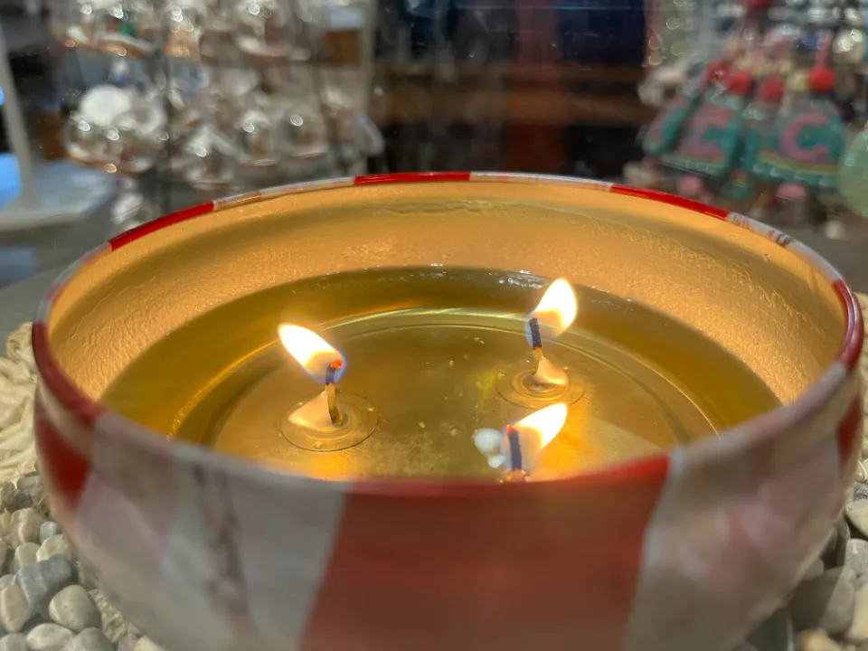
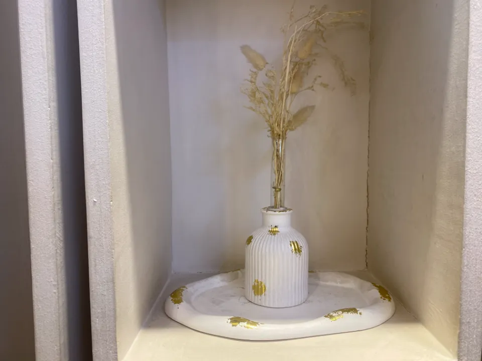
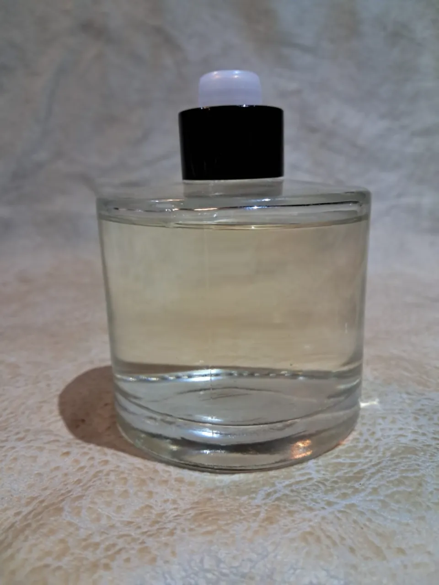
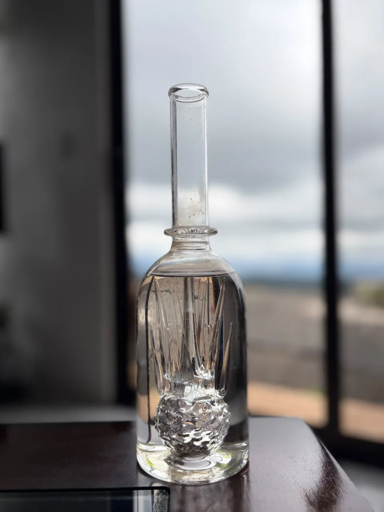
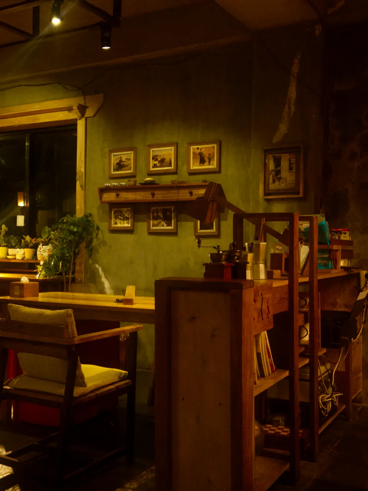
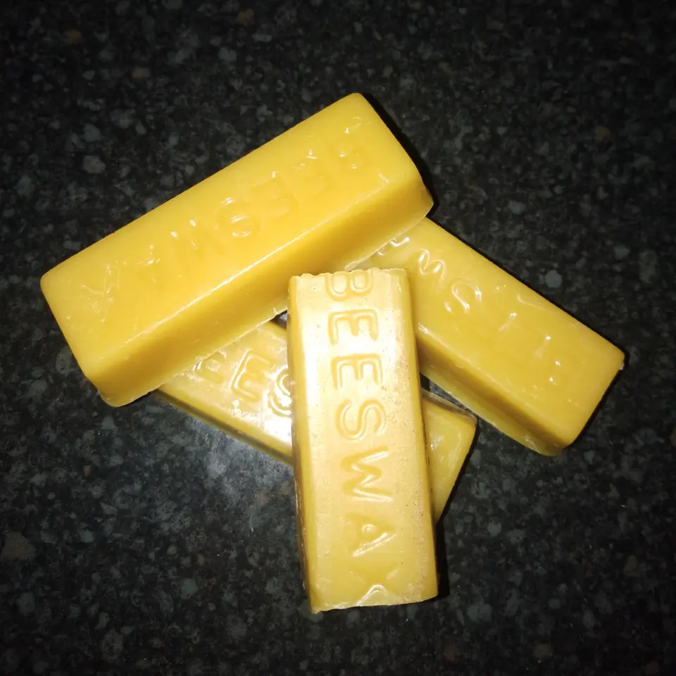
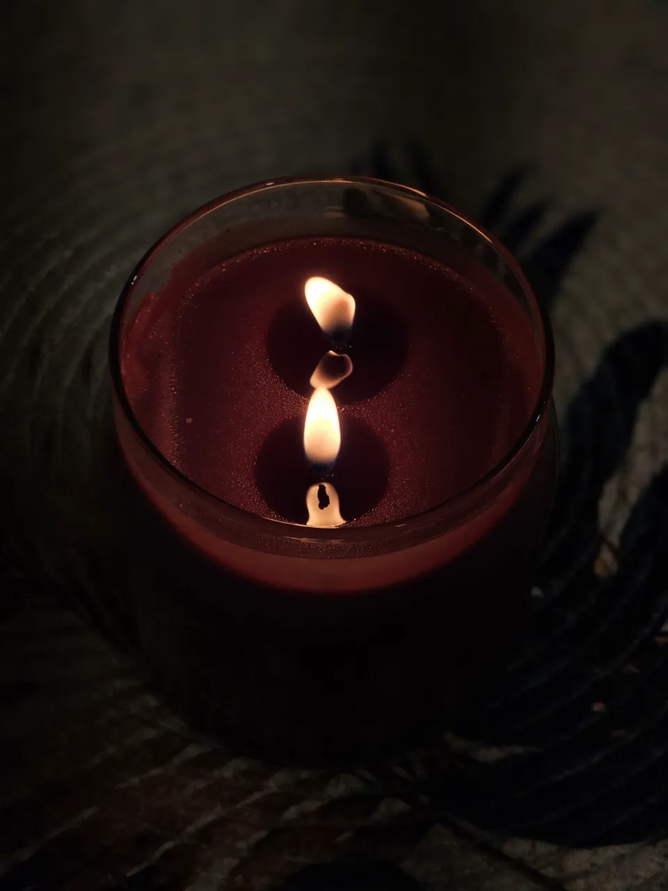

About Ember & Wick
The heart behind each candle.
A candle-making studio built on one idea: the best candles are made slowly, by hand — and shared.

Our story
A candle you make yourself feels different when you light it.

What we stand for
Handmade craftsmanship: wax, wick and scent, worked carefully by hand rather than in a hurry.
How we make
Patiently. We teach the way we work — showing each step, then giving you room to make it yours.
The idea behind the workshops
Beginners and experienced makers can share one bench, follow the same craft, and each make something entirely their own.
Why it matters
Because of the moment you light it: a small, warm thing that exists because you made it.
Our approach
Five things every candle deserves.
Materials & preparation
Measured wax, a well-chosen wick and a clean vessel. Good candles start before anything melts.
Fragrance
Time to explore notes on their own and together, until a blend feels right.
Technique
Gentle heat, the right moment to add scent, and a steady pour — learned by doing, not watching.

Creative expression
Colour, layers and vessel are yours to decide. We’ll show you what’s possible.
Finishing touches
Letting the wax set, trimming the wick and checking the surface: the quiet steps that make a candle burn well.


The studio experience
A room made for making.
-
Welcoming from the start
No experience needed. You’ll be guided from the moment you sit down.
-
Hands-on throughout
You do the making yourself: measuring, melting, scenting and pouring.
-
Materials to explore
Time to compare waxes, smell fragrance notes and choose what feels right.
-
Something personal
A candle shaped by your own choices, from the scent to the vessel.
What we offer
Two ways to make with us.
Candle-making workshops
Hands-on sessions for every level — beginners are guided through each step; experienced makers can go further with technique and design.
- Container candlesPour wax into a vessel you choose and set the wick.
- Scent blendingBuild a fragrance blend of your own and pour it.
- Pillar & decorative candlesMoulds, layers and colour for freestanding candles.


Candle-making kits
Bring the craft home: practise after a workshop, try it for the first time, or give it to someone who would love it.
Discover our kits
Light the first one with us.
Find a workshop that suits you, or ask us anything first — we’re glad to help you choose.